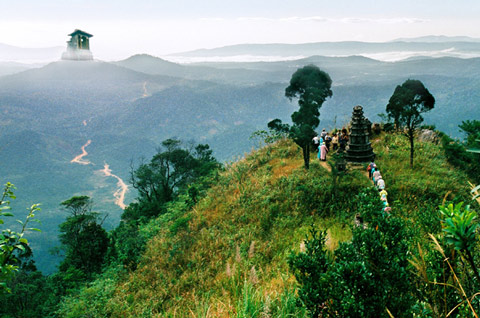
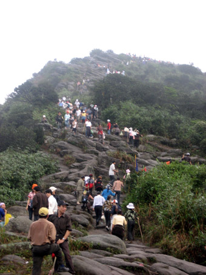
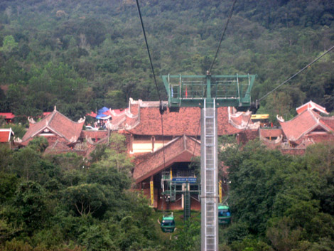

Trên Cao Gió Bạt Tiếng Eo Sèo

gày tôi lên núi Yên Tử lần đầu chưa có cáp treo. Phải trèo. Chín giờ sáng bắt đầu ở chân núi, trèo lên đến Hoa Yên đã hơn một giờ chiều. Đến đấy đã thấm mệt. Tất cả quyết định sẽ nghỉ đêm tại Hoa Yên, sáng mai mới leo tiếp lên chùa Đồng.
Nghe nói đoạn trên này ngắn hơn nhưng sẽ dốc hơn. Nhưng rồi đến bốn giờ chiều, anh em lại quyết định leo tiếp lên chùa Bảo Sái. Lên đến nơi núi rừng đã tối sầm không còn nhìn thấy gì nữa. Chùa chật ních người đến ngủ trọ.
Chúng tôi may mắn còn có chỗ, được xếp vào trong căn bếp của nhà chùa. Đêm ấy, cả toán nằm thẳng cẳng như xếp cá bên cạnh mấy bà già hành hương, tất cả khoảng hơn chục người, trong căn bếp ám đen bồ hóng.
Yên Tử một chuyến trèo lên
Sáng hôm sau tiếp tục hành trình leo núi. Có những đoạn gần như dốc đứng, mắt người leo dưới chạm gót chân người trèo bên trên. Bám vào đá mà leo. Bám vào rễ cây mà leo. Xuống thì có lúc phải nằm bò ra, bám vào rễ cây mà thả dần người xuống.

Mây trời Yên Tử - Ảnh: Thuvienhoasen
Lên Yên Tử, có người chỉ leo một ngày, đến chùa Đồng buổi tối cùng ngày nhưng mà phải dồn sức và kiệt sức. Có người bị tim mạch không leo tiếp được, phải dừng lại lưng chừng. Có người lên được đến đỉnh, nhưng khi xuống phải thuê võng. Hai người địa phương gánh cái võng đã được bó chặt, trèo xuống. Những chỗ dốc đứng, cái võng trông như tử thi bó chiếu lủng lẳng chiều thẳng đứng bên bờ vực. Hàng năm vẫn có người trượt chân rơi xuống.
Thế mà vẫn hân hoan đi. Tươi cười đi. Người trên xuống động viên người dưới lên: Sắp đến nơi rồi. Những bà già lưng còng, phải trên dưới tám mươi tuổi, chống gậy leo như không, gặp nhau chào A Di Đà Phật. Sức mạnh của tâm linh.
Thanh niên thì thở như kéo bễ, bò lê bò càng. Vẫn đi. Nhìn lại trên người không còn mang vác một cái gì. Nhìn sang người gánh thuê, tất cả tư trang của mình đã chạy sang bên ấy. Túi sách, balô... Tất tật mình đi giầy thể thao bó chắc vào chân. Chị gánh thuê chỉ đi dép lê. Quãng đường mình phải chia làm hai ngày để leo, có khi chị ta chỉ leo từ sáng đến trưa. Nếu trên đỉnh không có ai thuê gánh xuống thì lập tức trở xuống chân núi để làm chuyến nữa.
Một người buột miệng: "Từ giờ đến chết không quay lại Yên Tử nữa, nếu như không có cáp treo". Chị gánh thuê suýt xoa: "Có cáp treo thì chúng em chết, một năm chúng em chỉ nhờ mấy tháng gánh thuê này thôi".
Chính trên đỉnh núi Yên Tử hôm ấy tôi nhớ đến cái cáp treo lên xuống núi Linh Thứu Gridakuta ở Ấn Độ, nơi còn in dấu chân Phật. Đi thăm suốt ngày thành Vương Xá Rajgir, đến chân núi Linh thứu cũng đã khá mệt. Hệ thống cáp treo đưa khách lên thiền viện Nhật Bản trên một sườn núi. Ai trèo núi cứ trèo. Ai đi cáp treo cứ đi. Được lựa chọn là một đời sống dân chủ.
Loại cáp treo ở núi Linh Thứu là chair lift, tức là mỗi người một ghế, không có lớp vỏ bọc xung quanh, cũng không có mái che. Cứ thế du khách trôi trên những mỏm núi, những ngọn cây, trần ra giữa nắng gió. Chỉ có một thanh sắt chắn ngang trước bụng để khách không tuột ra khỏi ghế. Cứ thế mà lên đến thiền viện Nhật Bản, còn lên đến đỉnh núi còn dấu tích Phật ngồi thiền.
Eo sèo làm chi...
Hôm anh bạn buột một câu trên đỉnh núi Yên Tử về chuyện cáp treo, ai cũng nghĩ mơ tưởng hão huyền vậy mà thôi. Còn lâu. Thế mà chỉ ít năm sau báo chí đưa tin về dự án hệ thống cáp treo Yên Tử.
Thôi thì bao nhiêu lời bàn ra bàn vào. Bao nhiêu tiếng kêu phản đối. Người ta còn viện đến yếu tố tâm linh. Đến với tâm linh là phải đổ mồ hôi nước mắt, là phải mỏi gối chồn chân mới bày tỏ được lòng thành kính và niềm tin.
Người ta còn viện tới sự báng bổ khi cho khách ngồi trên cáp treo mà bay trên đầu trên cổ Phật tích và người hành hương. Rồi lí do làm hỏng cảnh thiên nhiên, làm hỏng môi trường, làm mất mĩ quan..

Đường lên chùa Đồng - Ảnh: Giacngo Online
Thì cứ coi những tiếng la ó kia là phản biện, lật qua lật lại vấn đề nhiều lần hơn, xem xét và đánh giá kĩ hơn, làm cho công trình hoàn chỉnh hơn. Phản biện đâu phải là nhằm mục đích xoá bỏ hoàn toàn.
Không phải là chữa bệnh mà rạch cho một nhát cho chết hẳn, chết đứ đừ. Không phải góp ý mà là rủa sả mạt sát. Phê bình con đường gốm sứ bên sông Hồng cũng đi đến mạt sát rằng người ta "đang bôi bẩn những bức tường".
Tôi nhớ con đường gốm sứ ở thủ đô Seoul của Hàn Quốc. Nơi trước kia có một con suối bùn rác người ta phủ bê tông lên trên làm một con đường, rồi xây cầu vượt phía trên con đường ấy. Đấy là cái giá của sự phát triển đô thị thời kì đầu.
Mấy chục năm sau, khi đã phát triển, người ta quyết định phá cầu vượt chắn mất tầm nhìn và thiếu mĩ quan và đắp con đường bê tông lên, khơi lại dòng suối. Như một con kênh nước chảy róc rách, hai bên kè bằng những tảng đá, trồng cỏ và lau sậy. Nó trở thành con đường đi bộ đẹp và tự nhiên. Hai bên suối là con đường gốm sứ, mới chỉ gần hai trăm mét. Bức tranh đức vua Jeongio viếng mồ phụ mẫu. 1.700 nhân vật và 800 con ngựa.
Con đường gốm sứ của ta chưa sánh được. Nhưng mà mấy chục cây số ven sông Hồng thay cho những bức tường xám loang lổ, giờ là hình ảnh vui mắt. Không cao siêu gì, thậm chí vẫn có những hình ảnh đơn giản, thô sơ, những biểu trưng lồ lộ của nhà tài trợ. Phản biện là đúng, cần lắng nghe phản biện để điều chỉnh, sửa chữa.
Nhưng phản biện hung hãn và cay nghiệt như chỉ nhằm mục đích huỷ diệt thì có còn là phản biện? Những lúc ấy lại cứ thầm nhủ trong lòng, như là đang hô to lên động viên những người thực hiện dừng tay, chớ ngừng lại, tiếp đi, làm tiếp đi.
Nhìn ra rõ ràng trong những người phản đối có cả những hoạ sĩ. Xin hãy phủ định tác phẩm này bằng một tác phẩm khác. Phân tích, bình luận, phê phán chỉ bằng lời thôi thì dễ dàng qua.
Sao nhỉ, sao mấy vị chê bai có chuyên môn ấy không tự nguyện đến nhập cuộc, tham gia vào, mỗi vị nhận lấy mấy mét tường, đây là cơ hội để bày tỏ khả năng sáng tạo và trách nhiệm công dân của họa sĩ! Và bắt tay vào làm cũng là cách phủ định những cái mà mình cho là chưa hay.
Trên cao bạt gió
Nhưng thực tế đã chứng tỏ người làm việc có nhiều, và người không làm việc lại nhiều hơn. Ngồi sẵn đâu đấy trong những công sở, những xalông, tiệm ăn, quán cà phê, bãi bia, thậm chí giữa đông đúc chợ người. Ai đi qua là bình phẩm. Ai làm ra một cái gì là chê bai.
Một tinh thần nhàn rỗi không chịu làm việc. Một tinh thần tự ti ngược, ngược tức là không làm nổi nhưng lại ra vẻ không có gì đáng làm. Một tinh thần ngoại đạo nhưng tự cho rằng mình có thể góp ý kiến về mọi lĩnh vực. Một tinh thần đồng nghiệp, khi không làm được nữa thì chê những người đang làm.

Cáp treo Yên Tử - Ảnh: Thuvienhoasen
Vậy thì đứng lên nào, động chân động tay lên nào, hò dô ta. Ta xây nhà làm đường, xây cáp treo, tàu điện ngầm. Ta phát minh, sáng chế. Ta làm kinh tế, làm nghệ thuật, làm văn chương. Thêm một cái mới làm thêm một cái quý. Vừa phải thôi, khiêm nhường thôi thì cũng quý. Ta phê bình, phản biện để cho nó mới hơn, tốt hơn, không phải để tiêu huỷ, để đập bỏ, để chắn ngang đường.
Bây giờ Yên Tử đã có cáp treo. Đoạn đường từ chân núi lên lưng chừng Hoa Yên leo bộ mất ba bốn tiếng đồng hồ, giờ đây đi cáp treo chỉ mười lăm phút.
Người già cả có cơ hội. Người bệnh khớp, bệnh tim có cơ hội. Người khuyết tật, thiệt thòi có cơ hội. Từ Hoa Yên, nghe đâu sắp tới cũng sẽ có cáp treo lên đến tận đỉnh. Loại chair car hay cable car, ngồi trong lồng kính bao bọc, không ngại mưa gió. Cái cáp treo lên đất Phật là cơ hội cho mọi người.
Tôi thì vẫn trèo 900m còn lại lên đến chùa Đồng. Đi qua rừng trúc ướt đẫm sương, mù mịt sương. Gió lộng bạt cả tiếng người. Sương và mây đều bay. Không khí nghìn năm còn nguyên đấy. Không khí tâm linh còn nguyên đấy.
Hồ Anh Thái (Tuổi Trẻ số Tết 2010)